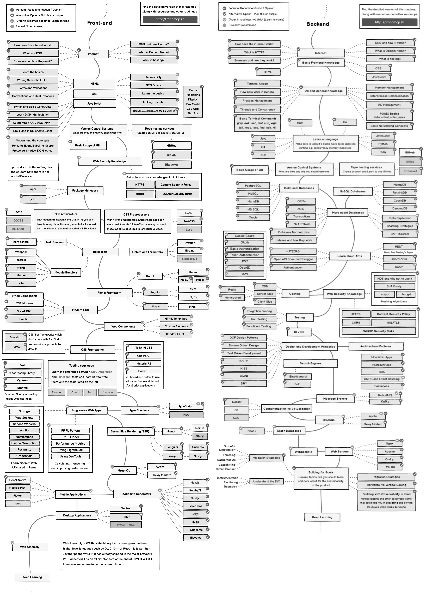
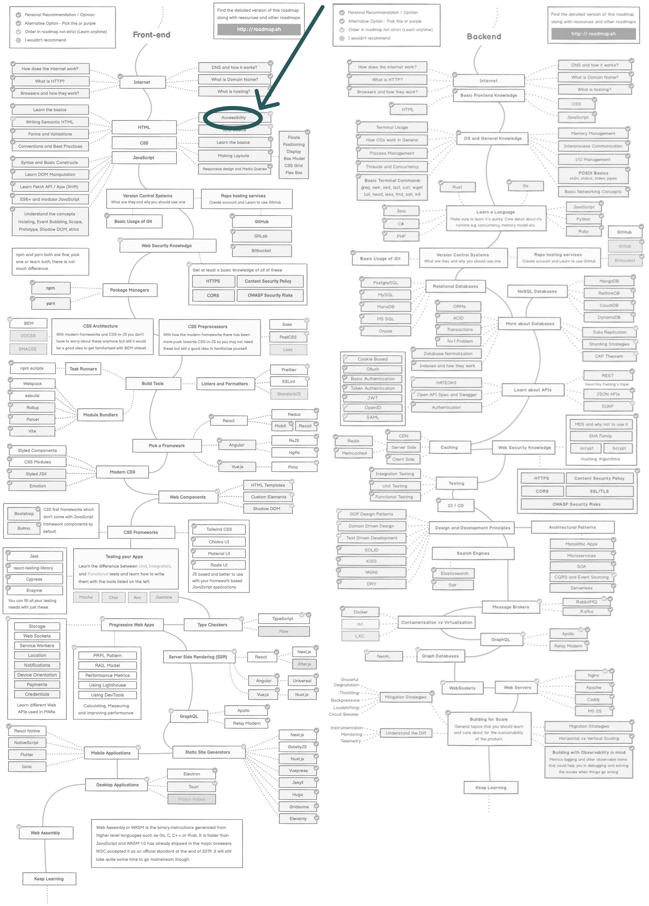
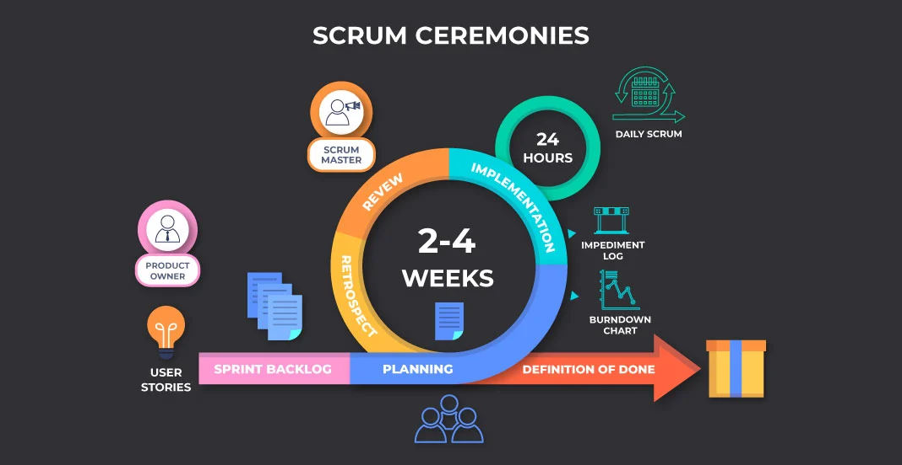

Entice 'em
Getting engineers
excited about accessibility
Engineers are less engaged with accessibility
If true... Why is that?
Engineers as a user
Who are they?
Responsible for...
Creating, testing, & maintaining software
in a usable, secure, privacy focused, responsive, scalable, testable, maintainable, performant, efficient, resilient, safe, accessible, and 100+ manner
Need to learn...


Want...
Process, priority, simplicity
Want...
Processes, priority, simplicity
Workload management
React
Testing Library
Enforce user centric tests
<Button
label="Add a new fish"
onClick="this.showFishInput"
/>
<Input
aria-label="Fish name"
class="fishInput"
/>
fireEvent.showFishInput()
expect(<Input class="fishInput"/>) to render 🤯
<Button
label="Add a new fish"
onClick="this.showFishInput"
/>
<Input
aria-label="Fish name"
class="fishInput"
/>
userEvent.click(screen.getByText('Add a new fish'));
expect(
screen.getByRole('input', { name: 'Fish name' })
).toBeInTheDocument(); ❤️
What about React?
Improved docs,
development assistance, & bundling
<img src="fishyImage.png"/>
(image-alt):
Ensures <img> elements have alternate text
or a role of none or presentation
<button tabindex="2">
Add a new fish
</button>
(tabindex):
Ensures tabindex attribute values
are not greater than 0
Create React App

People can
ignore tests?!
Yes... but you can make it harder
Bake it in
TDD, prevent commits & stop deploys
React told me off
...but not all the time
Bots don't know UX
Good HTML & copy...
We need humans for that
getting people excited about
accessibility
=
getting them excited about
design practice